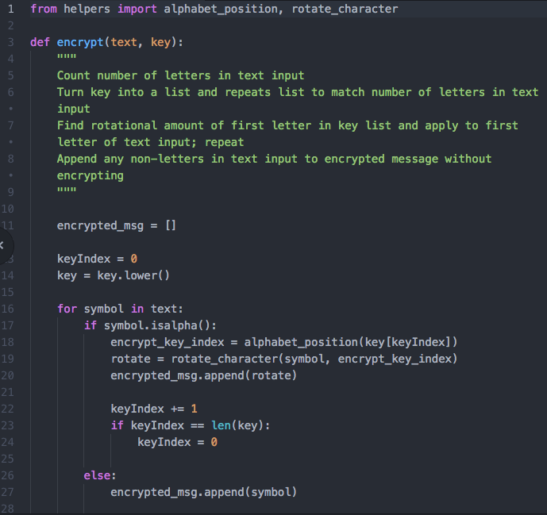
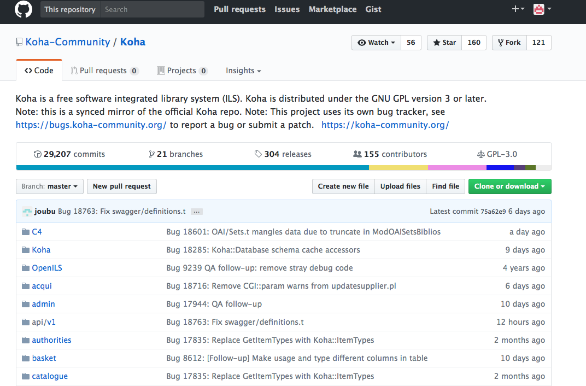

Crypto was the major assignment due at the end of Unit 1 of LaunchCode 101. It incorporates two pieces: a Caesar cipher, which encodes a message by shifting each character X number of places in the alphabet; and the Vigenère cipher, which encypts the message by using a repeating keyword to determine the number of places in the alphabet each character will shift.

A piece of my Vigenere cipher code.
Lambda School
Lambda School is an online bootcamp offering a variety of learning courses for students worldwide. While their part time and full time bootcamps require tuition, they periodically offer free online mini-bootcamps that include 6-8 webinars and homework assignments after each lesson. The lessons can be viewed live or asynchronously, and homework can be completed or not - no pressure! Topics rotate, but have included HTML, CSS, Javascript, Git and Github, and Python.
Homework instructions are cloned from an instructor's Github, and then we complete the assignments locally and post them on our own Github accounts. Here's one of my homework repositories.
Cookbook App
Project by Dana Pryor & Shannon Mulloy
My partner and I were tired of trying to remember if a recipe was on paper, scanned into our computers, or bookmarked on our phones, so we decided to build our own app! Cookbook will allow users to save recipes in one convenient location and access them easily on a computer or mobile device. They will be able to create their own profiles, search through and sort their recipe collections, and get new recipe ideas from other users.
Project Goals
Contibute to Open Source Code
One of my coding goals is to learn enough to be able to contribute to an open source project. Koha is an open source integrated library system, which librarians use to create and regulate patron accounts, put holds on items in their collections, and in general complete most functions that libraries are known for. Having used it as a librarian, I would love to help improve its usability for others.

A screenshot of some pieces of Koha, an open source integrated library system.
Participate in a Hackathon
Hackathons are awesome... the ones I've heard about involve meeting new people, some friendly competition, and free food and beer. I've been to one hackathon before but did not know anything about code at the time (honestly, I was just there for the free food and beer). I'd love to go to another one soon and really test my coding skills.